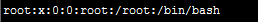

/etc/passwd

第1字段：用户名称
第2字段：密码标志
第3字段：UID（用户ID）
0 超级用户
1-499 系统用户（伪用户）
500-65535 普通用户
第4字段：GID（用户初始组ID）
第5字段：用户说明
第6字段：家目录
普通用户：/home/用户名/
超级用户：/root/
第7字段：登录之后的shell
初始组和附加组
初始组：就是指用户一登录就立刻拥有这个用户组的相关权限，每个用户的初始组只能有一个，
一般就是和这个用户的用户名相同的组名作为这个用户的初始组。
附加组：指用户可以加入多个其他的用户组，并拥有这些组的权限，附加组可以有多个。
shell就是Linux的命令解释器
在/etc/passwd当中，除了标准shell是/bin/bash之外，还可以写如/sbin/nologin
用户配置文件-影子文件
/etc/shadow
第1字段：用户名
第2字段：加密密码
加密算法升级为SHA512散列加密算法
如果密码位是“!!”或“*”代表没有密码，不能登录
第3字段：密码最后一次修改日期
使用1970年1月1日作为标准时间，每过一天时间戳加1
第4字段：两次密码的修改间隔时间（和第3字段相比）
第5字段：密码有效期（和第3字段相比）
第6字段：密码修改到期前的警告天数（和第5字段相比）
第7字段：密码过期后的宽限天数（和第5字段相比）
0： 代表密码过期后立即失效
-1: 则代表账号密码永远不失效
第8字段：账号失效时间
要用时间戳表示（时间戳：是指从1970年1月1日至今天的天数）
时间戳换算成日期：
date -d "1970-01-01 16066" days
把日期换算成时间戳：
echo $(($(date --date="2014/01/06" +%s)/86400+1))
第9字段：保留
用户配置文件-组信息文件
/etc/group

第1字段：组名
第2字段：组密码标志
第3字段：GID
第4字段：组中附加用户
用户配置文件-组密码文件
/etc/gshadow

第1字段：组名
第2字段：组密码
第3字段：组管理员用户名
第4字段：组中附加用户
用户和用户组管理-用户管理相关文件
1、用户家目录
普通用户：/home/用户名/，所有者和所属组都是此用户，权限是700.
超级用户：/boot/，所有者和所属者都是root用户，权限是500.
2、用户的邮箱
/var/spool/mail/用户名
3、用户模板目录
/etc/skel/ 用户都据此模板建立
权限管理
ACL权限
ACL权限简介与开启

ACL权限主要用来解决文件所属身份不足的问题
查看分区的ACL权限是否开启
# dumpe2fs -h /dev/sda3
#dumpe2fs命令是查询指定分区详细文件系统信息的命令
-h 仅显示超级块中信息，而不显示磁盘块组的详细信息
临时开启分区ACL权限
# mount -o remount,acl / #重新挂载根分区，并挂载加入acl权限
永久开启分区acl权限
# vi /etc/fstab
UUID=e0e4ad96-855a-434c-8df0-d6c776708779 / ext4 defaults,acl 1 1
#加入acl，现在一般默认就是挂载acl的
# mount -o remount / #重新挂载文件系统或重启动系统，使修改生效
查看与设定acl权限
getfacl 文件名 #查看acl权限
setfacl 选项 文件名
-m 设定ACL权限
-x 删除指定的ACL权限
-b 删除所有的ACL权限
-d 设定默认ACL权限
-k 删除默认ACL权限
-R 递归设定ACL权限
范例：$ setfacl -m u:st:rx /project/ #给用户st赋予r-x权限，使用“u:用户名:权限”
格式
$ setfacl -m g:tgroup:rwx /project/ #为组tgroup分配ACL权限，使用
“g:组名:权限”格式
$ setfacl -m m:rx 文件名 #设定mask权限为r-x。使用“m:权限”格式
删除ACL权限
# setfacl -x u:用户名 文件名 #删除指定用户的ACL权限
# setfacl -x g:组名 文件名 #删除指定用户组的ACL权限
# setfacl -b 文件名 #会删除文件的所有的ACL权限
递归ACL权限
递归ACL权限是指父目录在拥有ACL权限的同时，所有的子文件和子目录也会拥有相同的
ACL权限。（只针对父目录中现在有文件生效）
setfacl -m u:用户名:权限 -R 文件名 #在赋予父目录权限之后，建立的文件是不具有ACL权限的
默认ACL权限
默认ACL权限的作用是如果给你目录设定了默认ACL权限，那么父目录中所有新建的子文件都会继
承父目录的ACL权限。（只针对新增加的子文件生效）
setfacl -m d:u:用户名:权限 文件名
最大有效权限mask
[root@localhost /]# setfacl -m m:rx project/ #设定mask权限为r-x。使用“m:权限”格式
[root@localhost /]# getfacl project/
# file: project/
# owner: root/
#group: tgroup
user: :rwx
group: :rwx #effective:r-x
mask: :r-x
#mask权限变为了r-x
other: :---
文件特殊权限
SetUID权限
SetUID的功能
只有可以执行的二进制程序才能设定SUID权限
命令的执行者要对该程序拥有x（可执行）权限
命令执行者在执行该程序时即获得该程序文件的属主身份（在执行程序过程中灵魂附体为文件
的属主）
SetUID权限只在该程序执行过程中有效，也就是说身份改变只在程序执行过程中有效
passwd命令拥有SetUID权限，所以普通用户可以修改自己的密码
（密码文件保存位置：/etc/shadow）
cat命令没有SetUID权限，所以普通用户不能查看/etc/shadow文件内容。

设定SetUID方法
4代表SetUID
chmod 4755 文件名 #为文件设置SetUID权限，4代表SetUID.
（要删除SetUID权限，只需去掉4即可）
chmod u+s 文件名 #功能同上
危险的SetUID
关键目录应严格控制写权限。比如“/”,"/usr"等
用户的密码设置要严格遵守密码三原则
对系统中默认应该具有SetUID权限的文件作为一列表，定时检查有没有这之外的文件被设置了SetUID权限
SetGID权限
SetGID针对文件的作用
只有可执行的二进制文件才能设置SetGID权限
命令执行者要对该程序拥有x（可执行）权限
命令执行者在执行程序的时候，组身份升级为该程序文件的属组
SetGID权限同样只在该程序执行过程中有效，也就是说组身份改变只在程序执行过程中有效
SetGID针对目录的作用
普通用户必须对此目录拥有r和x权限，才能进入此目录
普通用户在此目录中的有效组变成此目录的属组
普通用户对此目录拥有w权限时，新建的文件默认属组是这个目录的属组
设定SetGID
2代表SetGID
chmod 2755 文件名 #为文件设置SetGID权限（要删除SetGID权限，去掉2即可）
chmod g+s 文件名
Sticky BIT权限
SBIT粘着位的作用
粘着位目前只对目录有效
普通用户对该目录拥有w和x权限，即普通用户可以在此目录拥有写权限
如果没有粘着位，因为普通用户拥有w权限，所以可以删除此目录下所有文件，包括其他用户建立的文件。一但赋予了粘着位，除了root可以删除所有文件，普通用户就算拥有w权限也只能删除自己建立的文件，但是不能删除其他用户建立的文件。
设置SBIT权限
chmod 1755 目录名
chmod o+t 目录名
文件系统属性chattr权限
命令名称：chattr
命令所在路径：/usr/bin/chattr
执行权限：所有用户
功能描述：
语法：chattr [+ - =选项] 文件或目录名
+：增加权限
-：删除权限
=：等于某权限
选项：
i：如果对文件设置i属性，那么不允许对文件进行删除、改名，也不能添加和修改数据
如果对目录设置i属性，那么只能修改目录下文件的数据，但不允许建立和删除文件。
a：如果对文件设置a属性，那么只能在文件中增加数据，但是不能删除也不能修改数据
如果对目录设置a属性，那么只允许在目录中建立和修改文件，但是不允许删除。
命令名称：lsattr
命令所在路径：/usr/bin/lsattr
执行权限：所有用户
功能描述：
语法：lsattr 选项 文件名
-a 显示所有文件和目录
-d 若目标是目录，仅列出目录本身的属性，而不是子文件
sudo权限（给普通用户赋予部分管理员权限）
root把本来只能超级用户才能执行的命令赋予普通用户执行
sudo的操作对象是系统命令
[root@localhost ~]# visudo #实际修改的是/etc/sudoers文件
root ALL=（ALL） ALL
#用户名 被管理主机地址=（可使用的身份） 授权命令（绝对路径）
#%wheel ALL=(ALL) ALL
#%组名 被管理主机地址=（可使用的身份） 授权命令（绝对路径）
用户名/组名：代表root给哪个用户或用户组赋予命令，注意组名前加“%”
用户可以用指定的命令管理指定IP地址的服务器。如果写ALL，代表可以管理任何主机，如果写固定IP，代表用户可以管理指定的服务器。（这里的IP指定的是用户可以管理哪个IP地址的服务器。那么你是一台独立的服务器，这里写ALL或你的服务器地址，作用是一样的。而写入网段，只有对NIS服务这样用户和密码集中管理的服务器才有意义）。如果我们这里写的是本机的IP地址，不代表只允许本机的用户使用指定命令，而是代表指定的用户可以从任何IP地址来管理当前服务器。
可使用身份：就是把来源用户切换成什么身份使用，（ALL）代表可以切换成任意身份。
授权命令：代表root把什么命令授权给普通用户。默认是ALL，代表任何命令，这个当然不行。如果需要给哪个命令授权，写入命名即可，不过需要注意一定要把命令写成绝对路径。
举例：
1）授权用户lamp可以重启服务器
[root@localhost ~]#visudo
lamp ALL=/sbin/shutdown -r now
2）授权一个用户管理web服务器
首先要分析授权用户管理Apache至少要实现哪些基本制授权
a、可以使用Apache管理脚本
b、可以修改Apache配置文件
c、可以更新网页内容
假设Apache管理脚本程序为/etc/rc.d/init.d/httpd。
为满足条件一，用visudo进行授权：
[root@localhost ~]#visudo
lamp 192.168.0.156=/etc/rc.d/init.d/httpd reload,/etc/rc.d/init.d/httpd configtest
授权用户lamp可以连接192.168.0.156上的Apache服务器，通过Apache管理脚本重新读取配置文件让更改的设置生效（reload）和可以检测Apache配置文件语法错误（configtest），但不允许其执行关闭（stop）、重启（restart）等操作。
为满足条件二，同样使用visudo授权：
[root@localhost ~]# visudo
lamp 192.168.0.156=/bin/vi /etc/httpd/conf/httpd.conf
授权用户lamp可以用root身份使用vi编辑Apache配置文件。
以上两种sudo的设置，要特别注意，很多人使用sudo会犯两个错误：
第一、授权命令没有细化到选项和参数；
第二、认为只能授权管理员执行的命令。
条件三比较简单，假设网页的存放目录为/var/www/html，则只需要授权lamp对此目录具有写权限或者索性更改目录所有者为lamp即可。如果需要，还可以设置lamp可以通过FTP等文件共享服务更新网页。
3）授权aa用户可以添加其他普通用户
aa ALL=/usr/sbin/useradd #赋予aa添加用户权限，命令必须写入绝对路径
aa ALL=/usr/bin/passwd #赋予改密码权限，取消对root密码修改
aa ALL=/usr/bin/passwd [A-Za-z]*, !/usr/bin/passwd " ", !/usr/bin/passwd root
普通用户执行sudo赋予的命令
$ sudo -l #查看可用的sudo命令
$ sudo /sbin/shutdown -r now #普通用户执行sudo赋予的命令